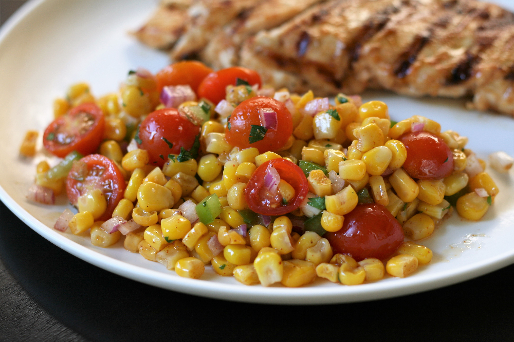

Zesty Southwest Corn Salad

This is one of my favorite dishes. The ingredients you will need are:
- Corn
- Cherry Tomatoes
- Green bell peppers
- Red onions
- Olive oil
- Cilantro
- Red wine vinegar
- lime juice
- Chili powder
- Cumin
- Garlic powder
- Cayenne pepper
Cooking Directions
- Combine corn, tomatoes, bell pepper, and onion in a large bowl.
- Whisk olive oil, cilantro, vinegar, lime juice, chili powder, cumin, garlic powder, and cayenne together in a small bowl. Add dressing to corn mixture just before serving and toss well.